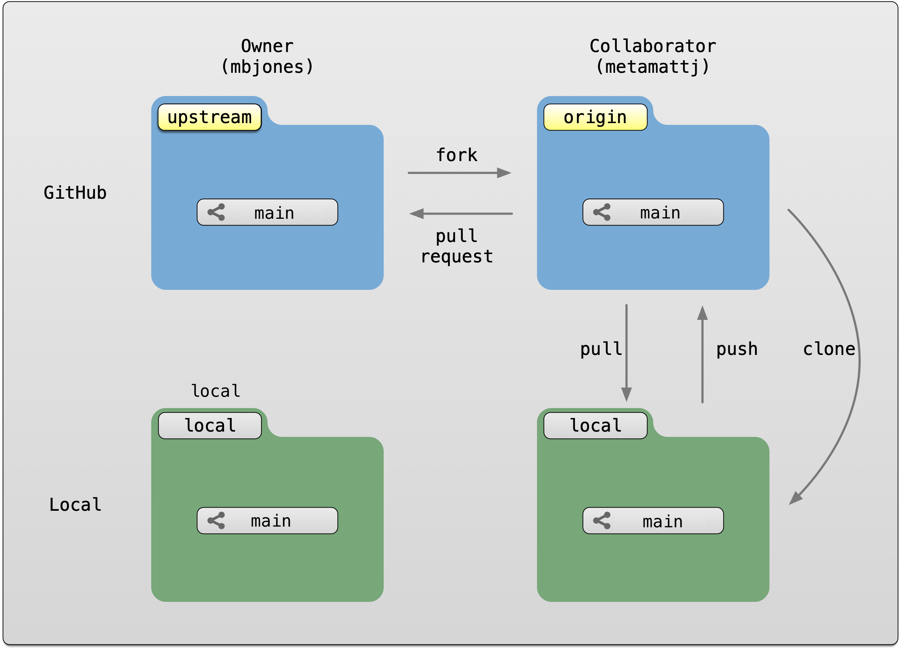
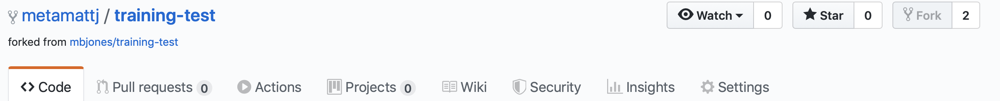
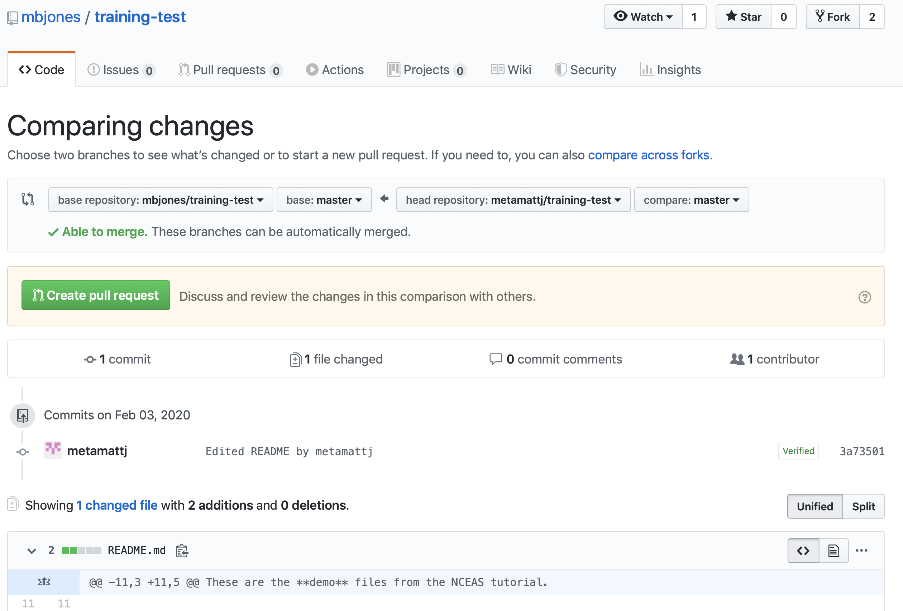

12.0.1 Learning Objectives
In this lesson, you will learn:
- New mechanisms to collaborate using Git
- What is a Pull Request in GitHub?
- How to contribute code to colleague’s repository using Pull Requests
- What is a branch in Git?
- How to use a branch to organize code
- What is a tag in Git and how is it useful for collaboration?
12.0.2 Pull requests
We’ve shown in other chapters how to directly collaborate on a repository with colleagues by granting them write privileges as a collaborator to your repository. This is useful with close collaborators, but also grants them tremendous latitude to change files and analyses, to remove files from the working copy, and to modify all files in the repository.
Pull requests represent a mechanism to more judiciously collaborate, one in which a collaborator can suggest changes to a repository, the owner and collaborator can discuss those changes in a structured way, and the owner can then review and accept all or only some of those changes to the repository. This is useful with open source code where a community is contributing to shared analytical software, to students in a lab working on related but not identical projects, and to others who want the capability to review changes as they are submitted.
To use pull requests, the general procedure is as follows. The collaborator first creates a fork of the owner’s repository, which is a cloned copy of the original that is linked to the original. This cloned copy is in the collaborator’s GitHub account, which means they have the ability to make changes to it. But they don’t have the right to change the original owner’s copy. So instead, they clone their GitHub copy onto their local machine, which makes the collaborator’s GitHub copy the origin as far as they are concerned. In this scenario, we generally refer to the Collaborator’s repository as the remote origin, and the Owner’s repository as upstream.

Pull requests are a mechanism for someone that has a forked copy of a repository to request that the original owner review and pull in their changes. This allows them to collaborate, but keeps the owner in control of exactly what changed.
12.0.3 Exercise: Create and merge pull requests
In this exercise, work in pairs. Each pair should create a fork of their partner’s training repository, and then clone that onto their local machine. Then they can make changes to that forked repository, and, from the GitHub interface, create a pull request that the owner can incorporate. We’ll walk through the process from both the owner and the collaborator’s perspectives. In the following example, mbjones will be the repository owner, and metamattj will be the collaborator.
Change settings (Owner): Edit the GitHub settings file for your
training-testrepository, and ensure that the collaborator does not have editing permission. Also, be sure that all changes in your repository are committed and pushed to theoriginserver.Fork (Collaborator): Visit the GitHub page for the owner’s GitHub repository on which you’d like to make changes, and click the
Forkbutton. This will create a clone of that repository in your own GitHub account. You will be able to make changes to this forked copy of the repository, but you will not be able to make direct changes to the owner’s copy. After you have forked the repository, visit your GitHub page for your forked repository, copy the url, and create a new RStudio project using that repository url.

- Edit README.md (Collaborator): The collaborator should make one or more changes to the README.md file from their cloned copy of the repository,
committhe changes, andpushthem to their forked copy. At this point, their local repo and GitHub copy both have the changes that they made, but the owner’s repository has not yet been changed. When you now visit your forked copy of the repository on GitHub, you will now see your change has been made, and it will say thatThis branch is 1 commit ahead of mbjones:main.

- Create Pull Request (Collaborator): At this point, click the aptly named
Pull Requestbutton to create a pull request which will be used to ask that the owner pull in your changes to their copy.

When you click Create pull request, provide a brief summary of the request, and a more detailed message to start a conversation about what you are requesting. It’s helpful to be polite and concise while providing adequate context for your request. This will start a conversation with the owner in which you can discuss your changes, they can easily review the changes, and they can ask for further changes before the accept and pull them in. The owner of the repository is in control and determines if and when the changes are merged.

- Review pull request (Owner): The owner will get an email notification that the Pull Request was created, and can see the PR listed in their
Pull requeststab of their repsoitory.

The owner can now initiate a conversation about the change, requesting further changes. The interface indicates whether there are any conflicts with the changes, and if not, gives the owner the option to Merge pull request.

- Merge pull request (Owner): Once the owner thinks the changes look good, they can click the
Merge pull requestbutton to accept the changes and pull them into their repository copy. Edit the message, and then clickConfirm merge.

Congratulations, the PR request has now been merged into the owner’s copy, and has been closed with a note indicating that the changes have been made.

- Sync with owner (Collaborator): Now that the pull request has been merged, there is a new merge commit in the Owner’s repository that is not present in either of the collaborator’s repositories. To fix that, one needs to pull changes from the
upstreamrepository into the collaborator’s local repository, and then push those changes from that local repository to the collaborator’soriginrepository.
To add a reference to the upstream remote (the repository you made your fork from), in the terminal, run:
git remote add upstream https://GitHub.com/ORIGINAL_OWNER/ORIGINAL_REPOSITORY.git
Then to pull from the main branch of the upstream repository, in the terminal, run:
git pull upstream main
At this point, the collaborator is fully up to date.

12.0.4 Branches
Branches are a mechanism to isolate a set of changes in their own thread, allowing multiple types of work to happen in parallel on a repository at the same time. These are most often used for trying out experimental work, or for managing bug fixes for historical releases of software. Here’s an example graph showing a branch2.1 that has changes in parallel to the main branch of development:

The default branch in almost all repositories is called main, and it is the branch that is typically shown in the GitHub interface and elsewhere. There are many mechanisms to create branches. The one we will try is through RStudio, in which we use the branch dialog to create and switch between branches.
12.0.4.1 Exercise:
Create a new branch in your training repository called exp-1, and then make changes to the RMarkdown files in the directory. Commit and push those changes to the branch. Now you can switch between branches using the GitHub interface.